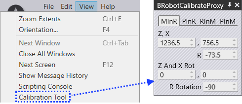
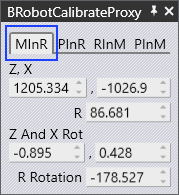
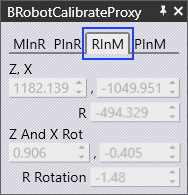
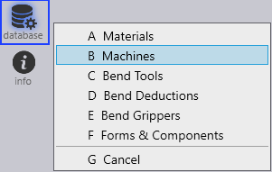
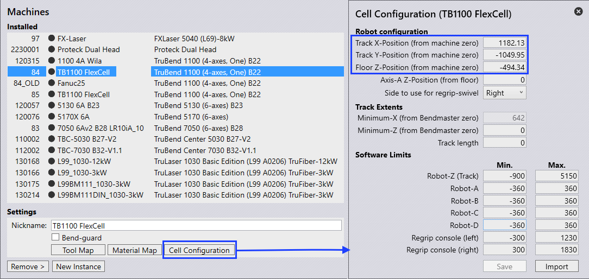
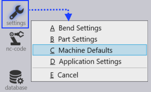
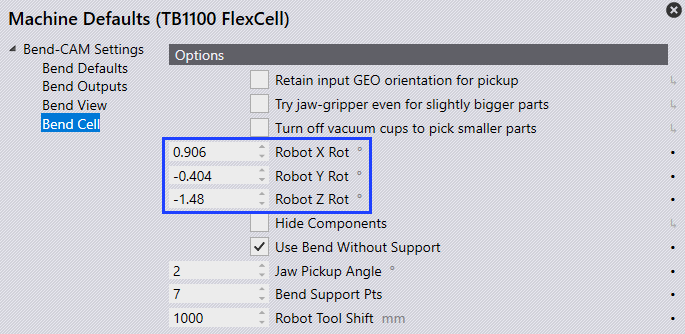
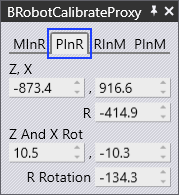
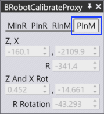
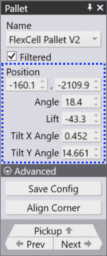

Cell configuration
This chapter explains how to configure the machine cell and update robot and pallet calibration values so FluxRobot CAM can generate correct NC output.
Follow the steps below carefully - incorrect values may produce wrong NC code and cause collisions or damage.
Calibration Tool
-
Start FluxRobot CAM.
-
Navigate to View → Calibration Tool.
-
Update the following calibration values in the Calibration Tool window.

Machine in Robot coordinate system (MInR)

-
By using the three point calibration method, the machine’s positions are calibrated with respect to the robot’s world coordinate system.
-
The coordinate values obtained by three point calibration should be entered in MInR.
Robot in machine coordinate system (RInM)

-
Once you enter MInR values, RInM values are computed automatically.
-
Update these values:
-
X, Y, Z → in Cell Configuration settings (Track X, Y, Z Positions).
-
W, P, R → in Machine Defaults settings (Robot X, Y, Z Rot).
-
Update these RInM values to let FluxRobot CAM know the exact position of the robot origin relative to the machine zero-point.
Update Cell Configuration Settings
-
Start FluxRobot CAM.
-
Install the required machine via Database → Machines option from the command bar on the left.

-
Go to the installed machine and select Cell Configuration.
-
Update RInM’s X, Y, Z values in Track X, Y, Z Positions.

-
Save the values and restart FluxRobot CAM for the changes to take effect.
Machine Default Settings
-
Start FluxRobot CAM.
-
Open a simple part and tool it up.
-
Go to Settings → Machine Defaults from the side menu.

-
Under Bend Cell settings, update the RInM’s W, P and R values in Robot X, Y, Z Rot.

-
Save the values and restart FluxRobot CAM.
Pallet in Robot coordinate system (PInR)

-
By using the three point calibration method, the pallet’s positions are calibrated with respect to the robot’s world coordinate system.
The pallet could be any user component (i.e, Pickup pallet or Centering table, Chute etc). -
The coordinate values obtained by three point calibration should be entered in PInR.
Pallet in machine coordinate system (PInM)

-
After entering PInR values, PInM values are computed automatically.
-
Update these PInM values in the corresponding pallet panel (Pickup Pallet, Centering Table, Chute) in order to let FluxRobot CAM know the exact position of the pallet origin relative to the machine zero-point.
Updating Pallet Position
-
Start FluxRobot CAM.
-
Open a simple part and tool it up.
-
Select the specific Pallet panel (i.e, Pickup Pallet, Centering Table, Chute etc) and update the corresponding PInM’s X, Y, Z, W, P, R values.

| Do not change these settings unless you are sure; entering the wrong values here will result in an incorrect NC program, which can cause unexpected collisions or damage. |